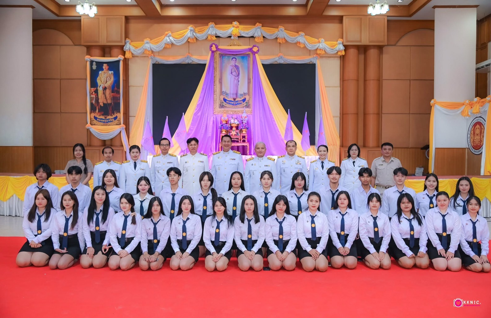

.png)


สาขา คอมพิวเตอร์ และ เทคโนโลยีธุรกิจดิจิทัล
สาขาคอมพิวเตอร์ และ เทคโนโลยีธุรกิจดิจิทัล คือ สาขาที่เปิดการเรียนการสอนแบ่งเป็น 2 หลักสูตรด้วยกัน คือสำหรับระดับชั้นประกาศนียบัตรวิชาชีพ ปวช.คือหลักสูตรคอมพิวเตอร์ธุรกิจ (usiness Computer) ประกาศนียบัตรวิชาชีพชั้นสูง ปวส. คือ หลักสูตรเทคโนโลยีธุรกิจดิจิทัล (Digital Business Technology)
สาขา คอมพิวเตอร์ธุรกิจ
สาขาที่เกี่ยวของกับการใช้งานคอมพิวเตอร์ผนวกกับธุรกิจ การจัดกิจกรรมการเรียนการสอนสาขาคอมพิวเตอร์ธุรกิจ ให้ความรู้พื้นฐานด้านคอมพิวเตอร์ ตลอดจนให้ความสำคัญกับเรื่อง ธุรกิจ เพื่อให้ผู้เรียนมีความรู้ความเข้าใจเกี่ยวกับธุรกิจ การบริหารธุรกิจ การจัดการ บัญชี และอื่น ๆ ที่เกี่ยวข้องกับธุรกิจ สาขาวิชาคอมพิวเตอร์ธุรกิจ จึงให้ความสำคัญทั้งความรู้ด้านคอมพิวเตอร์ และธุรกิจไปพร้อมกัน
สาขา คอมพิวเตอร์ธุรกิจ สอนอะไรบ้าง ?
วิชาที่สอนในสาขาคอมพิวเตอร์ธุรกิจ ในระดับชั้น ปวช. นั้นมีทั้งวิชาพื้นฐานทั่วไป เช่นวิทยาศาสตร์ คณิตศาสตร์ ภาษาไทย ภาษาอังกฤษ เป็นต้น แต่ก็จะไม่ได้เจาะลึกเหมือนกับเรียนสายสามัญทั่วไป เป็นการเรียนในเรื่องพื้นฐานมากกว่า แต่ที่สนุกคือ สาขาวิชาหลัก คือจะเป็นการเรียนเกี่ยวกับคอมพิวเตอร์ โดยส่วนมากจะอยู่ในห้องเรียนคอมพิวเตอร์เป็นส่วนใหญ่ วิชาที่สอนก็จะเป็น วิชากราฟิก การออกแบบ การสร้างเว็บไซต์ การตัดต่อ VDO การใช้โปรแกรม MS Office การทำฐานข้อมูล วิชาเครือข่าย เป็นต้น อีกทั้งวิชาเหล่านี้ก็จะเป็นการปฏิบัติจริง เน้นทำจริง ลงมือจริง โดยจะการเขียนโปรแกรมด้วย แต่ไม่ได้ซับซ้อนมาก เน้นเรียนรู้อย่างสนุก และเข้าใจ



สาขา เทคโนโลยีธุรกิจดิจิทัล ( หลักสูตร ปวส. )
ศึกษาเกี่ยวกับเทคโนโลยีสารสนเทศ เพื่อประยุกต์ใช้กับงานในภาคธุรกิจและภาคอุตสาหกรรม เรียนรู้ตั้งแต่พื้นฐานของระบบคอมพิวเตอร์ หลักการทำงาน ระบบเครือข่ายคอมพิวเตอร์ การดูแลบำรุงรักษาและซ่อมประกอบคอมพิวเตอร์ ตลอดจนการใช้โปรแกรมสำนักงาน การออกแบบซอฟต์แวร์ที่ใช้ควบคุมการทำงานฮาร์ดแวร์ ระบบฐานข้อมูล การออบแบบสื่อสิ่งพิมพ์ต่างๆ รวมทั้งการสร้างเว็บไซต์ ที่สามารถทำงานบนอุปกรณ์สมาร์ทโฟน การพัฒนาโมบายแอพพลิเคชั่น ตลอดจนการประยุกต์ความรู้พื้นฐานเกี่ยวกับเทคโนโลยีขั้นสูง มีการจัดกิจกรรมการเรียนโดยเน้นการฝึกทักษะสู่การปฎิบัติจริง เพื่อให้เกิดความชำนาญสามารถสร้างสื่อนวัตกรรมและเทคโนโลยีที่ทันสมัย สู่การเป็นนักคอมพิวเตอร์มืออาชีพที่ทันต่อโลกปัจจุบัน
สาขา เทคโนโลยีธุรกิจดิจิทัล สอนอะไรบ้าง ?
สาขานี้พัฒนามาจากสาขาเดิมคือ คอมพิมเตอร์ธุรกิจ แต่พัฒนาให้มีความทันสมัยมากขึ้น เน้นการใช้งานเทคโนโลยีใหม่ๆ โดยวิชาที่มีเรียนก็จะเป็น ระบบคอมพิวเตอร์ ทั้งอุปกรณ์ฮาร์ดแวร์และซอฟต์แวร์ รวมถึง การดูแลบำรุงรักษาและซ่อมแซมคอมพิวเตอร์ ศึกษาระบบปฎิบัติการคอมพิวเตอร์และอุปกรณ์โมบาย ศึกษาวิเคราะห์ ออกแบบและพัฒนาโครงสร้างโปรแกรม ศึกษาระบบเครือข่ายคอมพิวเตอร์ (Network) การออกแบบและพัฒนาเว็บไซต์ ที่สามารถใช้งานบนโมบายได้ การออกแบบกราฟิกและตัดต่อสื่อดิจิทัลทุกรูปแบบ ทั้ง 2D และ 3D การใช้โปรแกรมสำนักงาน (Ms.Microsoft Office) ก็ยังมีเรียนอยู่ วิชาหลักการคิดเชิงออกแบบ ที่เน้นให้ผู้เรียนกล้าคิดกล้าทำเพื่อให้เกิดนวัตกรรมทางเทคโนโลยีใหม่ ๆ เป็นต้น อีกทั้งยังสนับสนุน E-Sport อีกด้วย